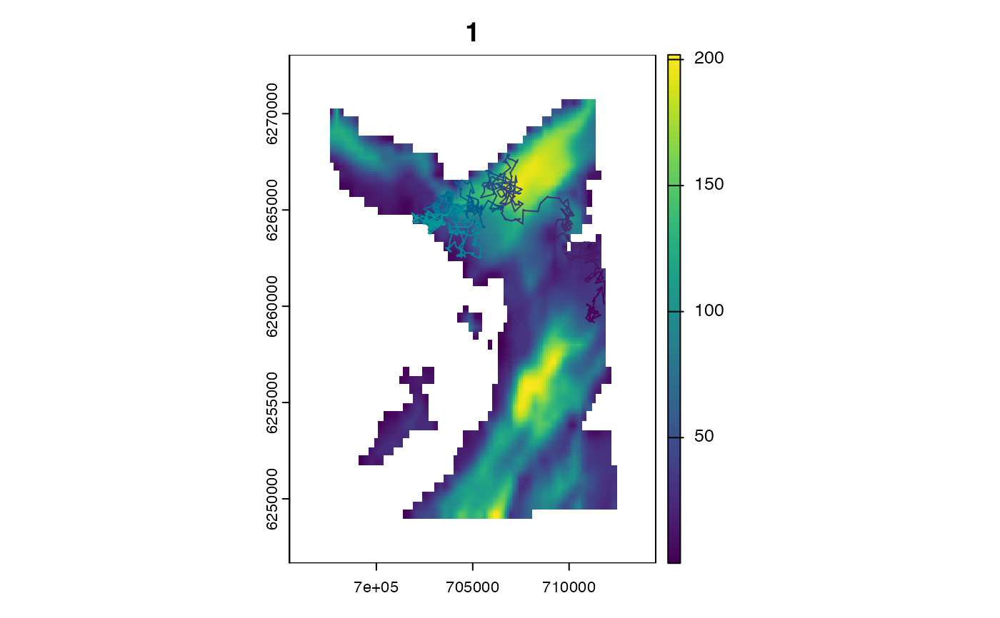
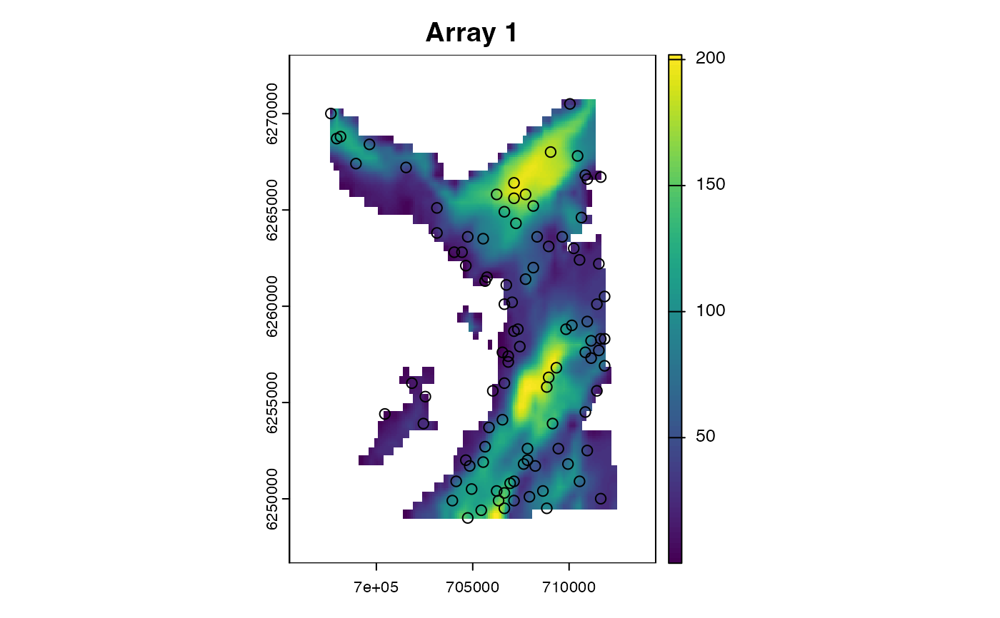
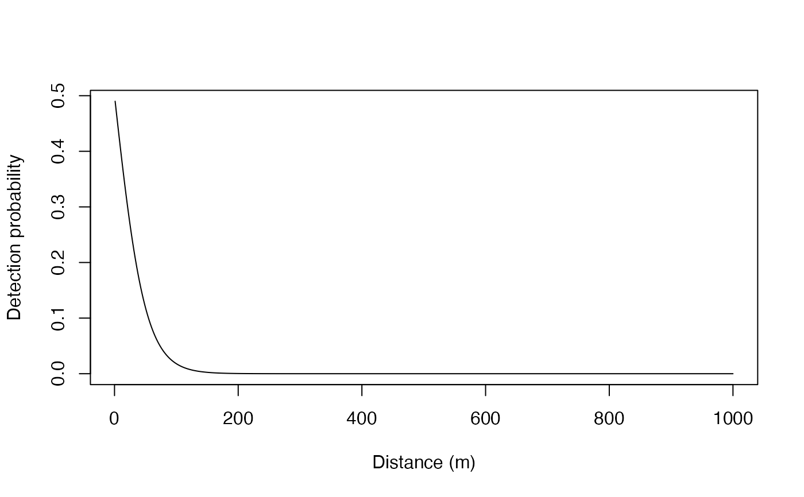
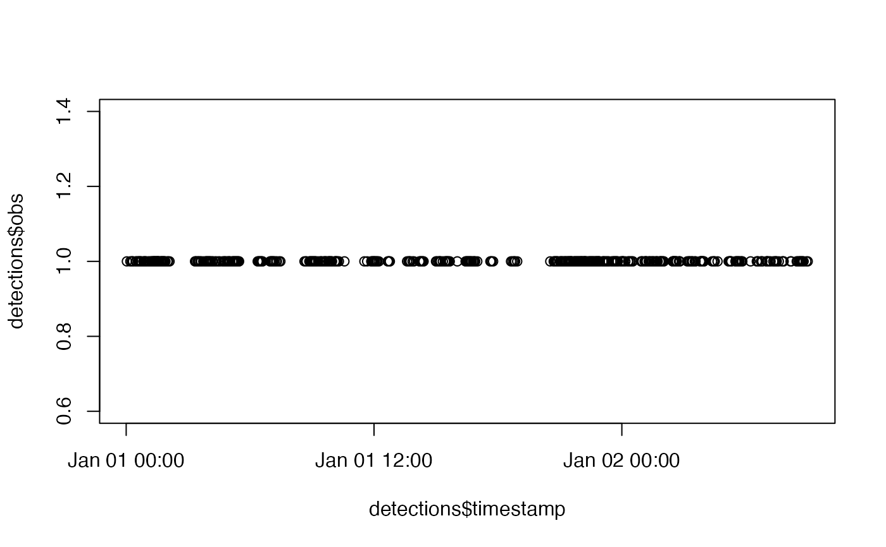

Simulate a time series of observations, such as acoustic detections and depth measurements, arising from simulated animal movement path(s).
sim_observations(.timeline, .model_obs, .model_obs_pars)A POSIXct vector of regularly spaced time stamps that defines the timeline for the simulation. This should match the .timeline used to simulate movement paths (see sim_path_walk()).
A character vector of ModelObs sub-type(s).
A list of data.tables, one for each model in .model_obs, that define observation model parameters.
The function returns a named list, with one element for each sensor type, that is .model_obs element. Each element is a list of data.tables, one for each simulated path. Each row is a time step. The columns depend on the model type.
This function wraps Patter.simulate_yobs(). The function iterates over simulated paths defined in the Julia workspace by sim_path_walk(). For each path and time step, the function simulates observation(s). Collectively, .model_obs and .model_obs_pars define the observation models used for the simulation (that is, a Vector of ModelObs instances). In Julia, simulated observations are stored in a hash table (Dict) called yobs, which is translated into a named list that is returned by R.
sim_* functions implement de novo simulation of movements and observations:
sim_path_walk() simulates movement path(s) (via ModelMove);
sim_array() simulates acoustic array(s);
sim_observations() simulates observations (via ModelObs);
if (julia_run()) {
library(data.table)
library(dtplyr)
library(dplyr, warn.conflicts = FALSE)
#### Connect to Julia
julia_connect()
set_seed()
#### Set up study system
# Define `map` (the region within which movements are permitted)
map <- dat_gebco()
set_map(map)
# Define study period
timeline <- seq(as.POSIXct("2016-01-01", tz = "UTC"),
length.out = 1000L, by = "2 mins")
#### Simulate path with default options
paths <- sim_path_walk(.map = map,
.timeline = timeline,
.state = "StateXY",
.model_move = move_xy())
#### Example (1): Simulate observations via `ModelObsAcousticLogisTrunc`
# Overview:
# * `ModelObsAcousticLogisTrunc`: observation model structure for acoustic observations
# * See ?ModelObsAcousticLogisTrunc
# * See JuliaCall::julia_help("ModelObsAcousticLogisTrunc")
# * This structure holds:
# - sensor_id (the receiver_id)
# - receiver_x, receiver_y (the receiver coordinates)
# - receiver_alpha, receiver_beta, receiver_gamma
# - (these are parameters of a truncated logistic detection probability model)
# * Using these fields, it is possible to simulate detections at receivers
# Simulate an acoustic array
a <- 4
b <- -0.01
g <- 750
moorings <- sim_array(.map = map,
.timeline = timeline,
.n_receiver = 100L,
# (optional) Define constant detection probability parameters
.receiver_alpha = a,
.receiver_beta = b,
.receiver_gamma = g)
# This is the shape of detection probability model for the parameters we have chosen
d <- seq(1, 1000, by = 1)
plot(d, ifelse(d <= g, plogis(a * b * d), 0),
ylab = "Detection probability",
xlab = "Distance (m)",
type = "l")
# Define a data.table of observation model parameters
moorings <-
moorings |>
select(sensor_id = "receiver_id",
"receiver_x", "receiver_y",
"receiver_alpha", "receiver_beta", "receiver_gamma") |>
as.data.table()
# Simulate observations
obs <- sim_observations(.timeline = timeline,
.model_obs = "ModelObsAcousticLogisTrunc",
.model_obs_pars = list(moorings))
# Examine simulated observations
# * sim_observations() returns a list, with one element for every `.model_obs`
# * Each element is a `list`, with one element for each simulated path
# * Each element is a `data.table` that contains the observations
str(obs)
# Plot detections
detections <-
obs$ModelObsAcousticLogisTrunc[[1]] |>
lazy_dt() |>
filter(obs == 1L) |>
as.data.table()
plot(detections$timestamp, detections$obs)
# Customise `ModelObsAcousticLogisTrunc` parameters
# > Receiver-specific parameters are permitted
moorings[, receiver_alpha := runif(.N, 4, 5)]
moorings[, receiver_beta := runif(.N, -0.01, -0.001)]
moorings[, receiver_gamma := runif(.N, 500, 1000)]
obs <- sim_observations(.timeline = timeline,
.model_obs = "ModelObsAcousticLogisTrunc",
.model_obs_pars = list(moorings))
#### Example (2): Simulate observations via `ModelObsDepthUniform`
# `ModelObsDepthUniform` is an observation model for depth observations
# * See ?ModelObsAcousticLogisTrunc
# * See JuliaCall::julia_help("ModelObsAcousticLogisTrunc")
pars <- data.frame(sensor_id = 1,
depth_shallow_eps = 10,
depth_deep_eps = 20)
obs <- sim_observations(.timeline = timeline,
.model_obs = "ModelObsDepthUniform",
.model_obs_pars = list(pars))
#### Example (3): Simulate observations via `ModelObsDepthNormalTrunc`
# `ModelObsDepthNormalTrunc` is an observation model for depth observations
pars <- data.frame(sensor_id = 1,
depth_sigma = 10,
depth_deep_eps = 20)
obs <- sim_observations(.timeline = timeline,
.model_obs = "ModelObsDepthNormalTrunc",
.model_obs_pars = list(pars))
#### Example (4): Simulate observations via custom `ModelObs` sub-types
# See `?ModelObs`
#### Example (4): Use multiple observation models
obs <- sim_observations(.timeline = timeline,
.model_obs = c("ModelObsAcousticLogisTrunc",
"ModelObsDepthNormalTrunc"),
.model_obs_pars = list(moorings, pars))
str(obs)
}
#> `patter::julia_connect()` called @ 2024-05-24 20:05:02...
#> ... Running `Julia` setup via `JuliaCall::julia_setup()`...
#> ... Validating Julia installation...
#> ... Setting up Julia project...
#> ... Handling dependencies...
#> ... Julia set up with 8 threads.
#> `patter::julia_connect()` call ended @ 2024-05-24 20:05:07 (duration: ~5 sec(s)).



#> List of 1
#> $ ModelObsAcousticLogisTrunc:List of 1
#> ..$ :Classes ‘data.table’ and 'data.frame': 100000 obs. of 8 variables:
#> .. ..$ timestamp : POSIXct[1:100000], format: "2016-01-01 00:00:00" "2016-01-01 00:00:00" ...
#> .. ..$ obs : int [1:100000] 0 0 0 0 0 0 0 0 0 0 ...
#> .. ..$ sensor_id : int [1:100000] 1 2 3 4 5 6 7 8 9 10 ...
#> .. ..$ receiver_x : num [1:100000] 704442 703942 710842 705842 710142 ...
#> .. ..$ receiver_y : num [1:100000] 6262807 6249907 6266807 6253707 6259007 ...
#> .. ..$ receiver_alpha: num [1:100000] 4 4 4 4 4 4 4 4 4 4 ...
#> .. ..$ receiver_beta : num [1:100000] -0.01 -0.01 -0.01 -0.01 -0.01 -0.01 -0.01 -0.01 -0.01 -0.01 ...
#> .. ..$ receiver_gamma: num [1:100000] 750 750 750 750 750 750 750 750 750 750 ...
#> .. ..- attr(*, ".internal.selfref")=<externalptr>

#> List of 2
#> $ ModelObsAcousticLogisTrunc:List of 1
#> ..$ :Classes ‘data.table’ and 'data.frame': 100000 obs. of 8 variables:
#> .. ..$ timestamp : POSIXct[1:100000], format: "2016-01-01 00:00:00" "2016-01-01 00:00:00" ...
#> .. ..$ obs : int [1:100000] 0 0 0 0 0 0 0 0 0 0 ...
#> .. ..$ sensor_id : int [1:100000] 1 2 3 4 5 6 7 8 9 10 ...
#> .. ..$ receiver_x : num [1:100000] 704442 703942 710842 705842 710142 ...
#> .. ..$ receiver_y : num [1:100000] 6262807 6249907 6266807 6253707 6259007 ...
#> .. ..$ receiver_alpha: num [1:100000] 4.85 4.85 4.48 4.77 4.3 ...
#> .. ..$ receiver_beta : num [1:100000] -0.0033 -0.0022 -0.00524 -0.00461 -0.00156 ...
#> .. ..$ receiver_gamma: num [1:100000] 859 743 994 532 579 ...
#> .. ..- attr(*, ".internal.selfref")=<externalptr>
#> $ ModelObsDepthNormalTrunc :List of 1
#> ..$ :Classes ‘data.table’ and 'data.frame': 1000 obs. of 5 variables:
#> .. ..$ timestamp : POSIXct[1:1000], format: "2016-01-01 00:00:00" "2016-01-01 00:02:00" ...
#> .. ..$ obs : num [1:1000] 178 178 177 165 171 ...
#> .. ..$ sensor_id : int [1:1000] 1 1 1 1 1 1 1 1 1 1 ...
#> .. ..$ depth_sigma : num [1:1000] 10 10 10 10 10 10 10 10 10 10 ...
#> .. ..$ depth_deep_eps: num [1:1000] 20 20 20 20 20 20 20 20 20 20 ...
#> .. ..- attr(*, ".internal.selfref")=<externalptr>